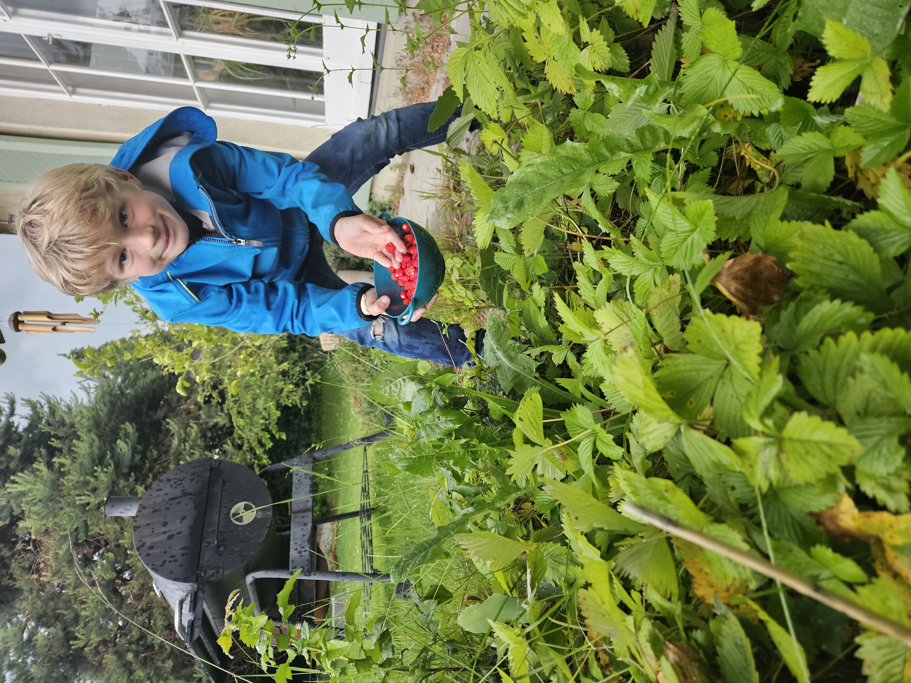

BLOGROLLS


Steine bemalen
Steine bemalen
Überall im Garten verteilt finden wir leckeres Unkraut.
 ..war aber in 5min verputzt :-D
If you found the article helpful, please share or cite the article, and spread the word:


For any feedback or corrections, please write in to: Luc&Len